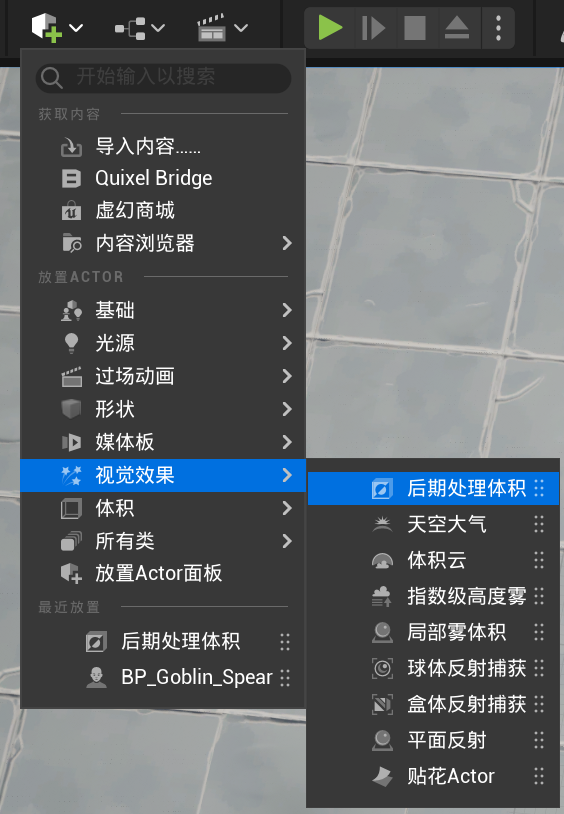
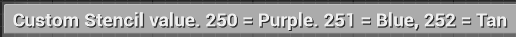

现在要实现一个新功能：鼠标悬停在某个 Actor 身上时，能够使其高亮显示，移走时取消高亮。
基于面向对象的 Is-a 设计思想，可以用一个抽象类
Highlightable，只提供 Highlight() 和
Unhighlight()
接口（纯虚函数），并将实现交给派生类完成。一旦某一个类继承自
Highlightable
并实现了那两个接口，那么这个类就是「可高亮的」，这意味着当鼠标悬停到这个类在世界中的实例时，它就会高亮显示。
所以第一步是创建一个虚幻接口类，命名为
RHighlightable。
打开 C++ 发现头文件中定义了两个类，其中 U
开头的那个是一个空白类，它的存在只是为了向 UE 反射系统确保可见性。将由
I 前缀的类进行实际接口的声明，同时被其他类继承。在
IRHighLightable
类中加入上述两个纯虚函数后，进行派生类的实现。
添加鼠标悬停判定
所有设备输入都会流到
Controller，鼠标也不例外。这里需要每一帧都检查一遍鼠标悬停的对象，如果是
Highlightable，就令其高亮，如果和之前的高亮对象不是同一个，那就取消前一个对象的高亮效果。所以这里就要用到两个变量来表示当前鼠标悬停的对象
Cur 和上一帧的对象 Last。
为了实现逐帧检查，就需要重载基类的 PlayerTick()
函数，这是一个每一帧都会调用的函数，我们需要做的就是在该函数中执行鼠标悬停对象的检查（不妨把检查行为剥离出来成为一个新函数
CursorTrace()）。
这里使用到的函数为
GetHitResultUnderCursor()，这是一个用于在屏幕上根据指定
Channel
获取鼠标光标下的碰撞结果的函数。在该功能下，选择用可见性通道(ECC_Visibility)进行碰撞检测，这很符合常理，毕竟如果发生了前后遮挡，我们只希望高亮最前面的那个。
实现如下：
Components/RPlayerController.hUCLASS() class ACTIONRPG_API ARPlayerController : public APlayerController { protected: void PlayerTick(float DeltaTime) override; private: void CursorTrace(); IRHighLightable* Last; IRHighLightable* Cur; };
Components/RPlayerController.cppvoid ARPlayerController::PlayerTick(float DeltaTime) { Super::PlayerTick(DeltaTime); CursorTrace(); } void ARPlayerController::CursorTrace() { // 描述碰撞检测结果的结构体 FHitResult CursorHit; if (!GetHitResultUnderCursor(ECC_Visibility, false, CursorHit)) return; Last = Cur; Cur = Cast<IRHighLightable>(CursorHit.GetActor()); if (Last == Cur) return; if (Last) Last->UnHighlight(); if (Cur) Cur->Highlight(); }
实现高亮
因为现在只实现了敌怪类，没有其它可以高亮的，所以先拿它开刀。来到
UREnermyBase 中，令其继承自
IRHighLightable，同时创建接口 override 声明。
高亮效果
为了添加高亮效果，需要回到编辑器中，在世界场景添加一个「后期处理体积」的 Actor。

选中该 Actor 实例，在「后期处理材质」中添加 PP_Highlight（免费的素材），并勾选「无限范围」选项，这就使得高亮效果能够作用到所有满足条件的 Actor。
与此同时还要进入「项目设置」「后期处理」，将「自定义深度-模板通道」设置为「启用模板」。
点开 PP_Highlight 资产，遍历蓝图节点，发现当「Custom Stencil Value」达到 250 才会在 Mesh 表面浮现一层红色（purple？）的高亮效果。

这个值是在 Mesh 中的「自定义深度模板值」这设置的，一旦一个 Mesh 设置了该值（并且满足渲染条件），同时启用了「深度通道中渲染」，就会浮现高亮效果。同理，关闭「深度通道中渲染」，就会取消高亮效果。
这部分不是学习重点，仅仅是跟着过了一遍。
回到 C++，修改 UREnermyBase
的构造函数与接口实现，以正确设置「自定义深度模板值」和「深度通道中渲染」选项。
AREnermyBase::AREnermyBase()
{
// Block Visibility 通道，以被检测到
GetMesh()->SetCollisionResponseToChannel(ECC_Visibility, ECR_Block);
GetMesh()->CustomDepthStencilValue = 250.0f;
Weapon->SetCollisionResponseToChannel(ECC_Visibility, ECR_Block);
Weapon->CustomDepthStencilValue = 250.0f;
}
void AREnermyBase::Highlight()
{
GetMesh()->SetRenderCustomDepth(true);
Weapon->SetRenderCustomDepth(true);
}
void AREnermyBase::UnHighlight()
{
GetMesh()->SetRenderCustomDepth(false);
Weapon->SetRenderCustomDepth(false);
}关于碰撞的处理方式，需要记住几点规则：
- 如果对另一个 Actor 设置了 Ignore，那么无论其碰撞预设如何，双方都不会触发事件。
- Overlap 和 Ignore 唯一的区别在于，前者可以启用「生成重叠事件」，这样在重叠时（并且另一个对象没有 Ignore 自己）会触发「重叠事件」（如
OnComponentBeginOverlap、OnComponentEndOverlap）。- 仅当两个 Actor 之间都对对方 Block 时才有阻挡效果，但是需要启用「模拟生成命中事件」才能触发「命中事件」（如
OnComponentHit）。
- 如果希望两个 Actor 彼此阻挡，就都需要设置为阻挡相应的对象类型。
- 即使一个 Actor 会阻挡另一个 Actor，也可以生成重叠事件。
- 对于两个或更多模拟对象：如果一个设置为重叠对象，另一个设置为阻挡对象，则发生重叠，而不会发生阻挡。
- 不建议一个对象同时拥有碰撞和重叠事件。虽然可以，但需要手动处理的部分太多。
——参考自虚幻引擎官方文档：碰撞概述